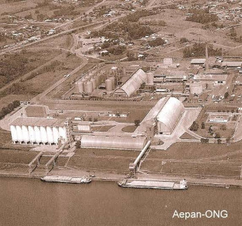

História
Esses aspectos históricos ajudam a compreender a relevância do Rio Taquari na formação cultural e econômica do Rio Grande do Sul. A história do rio está intrinsecamente ligada à colonização, ao desenvolvimento agrícola e à memória coletiva das comunidades que habitam suas margens.
Presença indígena
Antes da chegada dos colonizadores europeus, o Rio Taquari era habitado por diferentes povos indígenas, como os guaranis e os caingangues. Essas comunidades nativas dependiam do rio para o abastecimento de água, pesca e transporte.
Colonização europeia
Durante o período colonial, o Rio Taquari desempenhou um papel importante na colonização da região. Os primeiros colonizadores europeus utilizaram o rio como uma rota de transporte para conectar os territórios internos aos centros urbanos costeiros, facilitando o escoamento da produção agrícola e o comércio.
Desenvolvimento econômico
A presença do Rio Taquari foi fundamental para o desenvolvimento econômico da região. À medida que as atividades agrícolas se expandiram, principalmente a produção de arroz e soja, o rio foi utilizado para irrigação e transporte de mercadorias, impulsionando a economia local.
Porto de Estrela
No município de Estrela, o Rio Taquari foi de extrema importância para o estabelecimento do Porto de Estrela, que se tornou um ponto estratégico para o transporte de cargas na região.
O porto permitia a saída de produtos agrícolas, como grãos e madeira, para outras regiões do estado e do país.
Enchentes históricas
O Rio Taquari é conhecido por suas enchentes históricas, algumas das quais deixaram marcas na memória coletiva da população local. Alguns eventos significativos ocorreram em 1941, 1976, 1983, 2013 e 2019, causando grandes danos materiais e sociais. Essas enchentes reforçaram a necessidade de medidas de prevenção e controle para minimizar os impactos causados por esses eventos naturais.
Importância cultural
Além de seu impacto econômico, o Rio Taquari também desempenha um papel importante na cultura e nas tradições locais. Ele inspira artistas, escritores e músicos da região, sendo mencionado em poesias, canções e manifestações culturais, como a Semana Farroupilha, uma festa tradicional gaúcha.